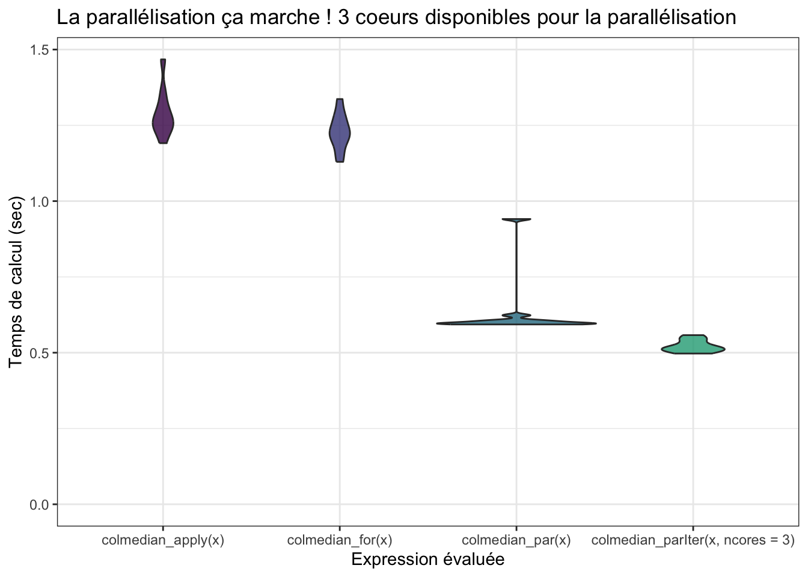
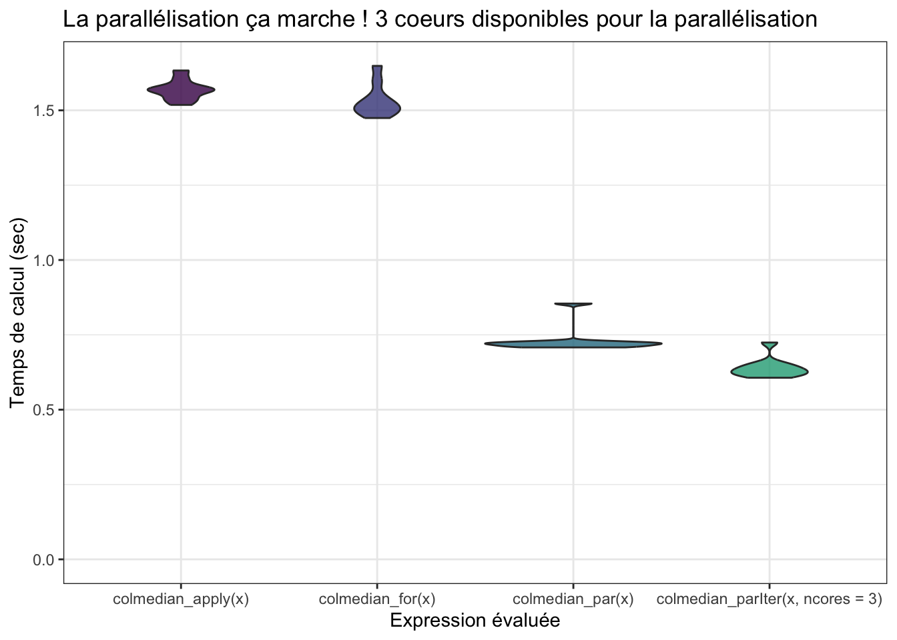

Chapitre 6 Parallélisation du code R
6.1 Introduction à l’execution parallèle sous R
En dehors de l’optimisation du code et des algorithmes, une autre façon d’obtenir un code performant est de tirer profit des architectures parallèles des ordinateurs modernes. Il s’agit alors de paralléliser son code afin de faire des opérations simultanées sur des parties distinctes d’un même problème, en utilisant différent cœurs de calcul. On ne réduit pas le temps de calcul total nécessaire, mais l’ensemble des opérations s’exécute plus rapidement.
Il existe un nombre non négligeable d’algorithmes qui sont d’un “parallélisme embarrassant”, c’est-à-dire dont les calculs peuvent se décomposer en plusieurs sous-calculs indépendants. En statistique, il est ainsi souvent facile et direct de paralléliser selon les différentes observations ou selon les différentes dimensions. Typiquement, il s’agit d’opérations que l’on peut écrire sous la forme de boucle dont les opérations sont indépendantes d’une itération de la boucle à l’autre.
Les opérations nécessaires pour l’établissement d’un code parallèle sont les suivantes :
Démarrer \(m\) processus “travailleurs” (i.e. cœurs de calcul) et les initialiser
Envoyer les fonctions et données nécessaires pour chaque tache aux travailleurs
Séparer les taches en \(m\) opérations d’envergure similaire et les envoyer aux travailleurs
Attendre que tous les travailleurs aient terminer leurs calculs et obtenir leurs résultats
Rassembler les résultats des différents travailleurs
Arrêter les processus travailleurs
Selon les plateformes, plusieurs protocoles de communications sont disponibles
entre les cœurs. Sous les systèmes UNIX, le protocole Fork est le plus
utilisé, mais il n’est pas disponible sous Windows où on utilise
préférentiellement le protocole PSOCK. Enfin, pour les architecture de calcul
distribuée où les cœurs ne se trouvent pas nécessairement sur le même processeur
physique, on utilise généralement le protocole MPI. L’avantage des packages
future et future.apply est que le même code pourra être exécuté quelque soit
la configuration matérielle.
Il existe un nombre important de packages et d’initiatives permettant de faire
du calcul en R. Depuis R 2.14.0, le package
parallel
est inclus directement dans R et permet de démarrer et d’arrêter un “cluster”
de plusieurs processus travailleur (étape 1 et 6). En plus du package
parallel, on va donc utiliser le package future qui permet de gérer les
processus travailleurs et la communication et l’articulation avec le package
future.applyqui permet lui de gérer le dialogue avec les travailleurs (envois,
réception et rassemblement des résultats - étapes 2, 3, 4 et 5).
6.2 Première fonction parallèle en R
À vous de jouer !
Commencez par écrire une fonction simple qui calcule le logarithme de \(n\) nombres:
Déterminez combien de coeurs sont disponibles sur votre marchine grâce à la fonction
future::availableCores().À l’aide de la fonction
future::plan(multisession(workers = XX)), déclarez un “plan” de calculs parallèles sur votre ordinateur (en prenant garde à laisser un coeur disponible pour traiter les autres processus).À l’aide d’une fonction de type apply
future.apply::future_*apply(), calculez le log des \(n\) nombres en parallèle et concaténez les résultats dans un vecteur.Comparez le temps d’éxecution avec celui d’une fonction séquentielle sur les 100 premiers entiers, grâce à la commande :
microbenchmark(log_par(1:100), log_seq(1:100), times=10)
library(microbenchmark)
library(future.apply)
log_seq <- function(x){
# try this yourself (spoiler alert: it is quite long...):
# res <- numeric(length(x))
# for(i in 1:length(x)){
# res[i] <- log(x[i])
# }
# return(res)
return(log(x))
}
log_par <- function(x){
res <- future_sapply(1:length(x), FUN = function(i) {
log(x[i])
})
return(res)
}
plan(multisession(workers = 3))
mb <- microbenchmark(log_par(1:100), log_seq(1:100), times = 50)
La version parallèle tourne beaucoup plus lentement… Car en fait, si les
tâches individuelles sont trop rapides, R va passer plus de temps à
communiquer avec les cœurs, qu’à faire les calculs effectifs.
Il faut qu’une itération de la boucle soit relativement longue pour que le calcul parallèle apporte un gain en temps de calcul !
En augmentant \(n\), on observe une réduction de la différence entre les 2 implémentations (le temps de calcul en parallèle augmente très lentement comparé à l’augmentation de celui de la fonction séquentielle).
NB : les itérateurs d’itertools sont très performants mais ne peuvent
servir que lorsque le code à l’intérieur de future_*apply() est vectorisé (il
est toujours possible de vectoriser le code à l’intérieur, par exemple avec une
fonction de type apply). Ils minimisent le nombre de communication entre les
coeurs.
6.3 Parallélisation efficace
On va maintenant se pencher sur un autre cas d’utilisation. Imaginons que l’on ait un grand tableau de données de taille comportant 10 observations pour 100 000 variables (e.g. des mesures de génomique), et que l’on veuille calculer la médiane pour chacune de ces variables.
x <- matrix(rnorm(1e6), nrow = 10)
dim(x)## [1] 10 100000Pour un utilisateur averti de R, une telle opération se programme facilement
à l’aide de la fonction apply :
colmedian_apply <- function(x){
return(apply(x, 2, median))
}
system.time(colmedian_apply(x))## utilisateur système écoulé
## 2.893 0.000 2.894En réalité, une boucle for n’est pas plus lente à condition d’être bien
programmée :
colmedian_for <- function(x){
ans <- rep(0, ncol(x))
for (i in 1:ncol(x)) {
ans[i] <- median(x[, i])
}
return(ans)
}
system.time(colmedian_for(x))## utilisateur système écoulé
## 2.642 0.000 2.642À vous de jouer !
Essayez d’améliorer encore ce temps de calcul en parallélisant :
Parallélisez le calcul de la médiane de chacune des 100 000 variables. Observe-t-on un gain en temps de calcul ?
Proposez une implémentation alternative grâce à la fonction
itertools::isplitIndices()qui permet de séparer vos données (les \(n\) nombres) en autant de groupes que vous avez de coeurs. Comparez à nouveau les temps de calcul.
colmedian_par <- function(x){
res <- future_sapply(1:ncol(x), FUN = function(i) {
median(x[, i])
})
return(res)
}
plan(multisession(workers = 3))
system.time(colmedian_par(x))## utilisateur système écoulé
## 0.163 0.012 1.865colmedian_parIter <- function(x, ncores = 1){
iter <- itertools::isplitIndices(n = ncol(x), chunks = ncores)
res <- future_sapply(iter, FUN = function(i) {
apply(x[, i], 2, median)
})
return(unlist(res))
}
system.time(colmedian_parIter(x, ncores = 3))## utilisateur système écoulé
## 0.144 0.020 1.787mb <- microbenchmark(colmedian_apply(x),
colmedian_for(x),
colmedian_par(x),
colmedian_parIter(x, ncores = 3), times = 10)
mb## Unit: seconds
## expr min lq mean median uq
## colmedian_apply(x) 2.855002 2.968180 3.004419 2.986824 3.019751
## colmedian_for(x) 2.775654 2.809329 2.909641 2.917691 2.968705
## colmedian_par(x) 1.714276 1.743171 1.863069 1.785169 1.864398
## colmedian_parIter(x, ncores = 3) 1.673829 1.703488 1.739814 1.747465 1.773543
## max neval
## 3.245923 10
## 3.135763 10
## 2.437516 10
## 1.819385 10
6.3.1 Les itérateurs
Le package itertools permet de séparer facilement des données ou des
taches (étape 3) tout en minimisant les communications avec les différents
travailleurs. Il s’appuie sur une implémentation des itérateurs en R.
Son utilisation nécessite néanmoins de vectoriser le code à l’intérieur de
future_*apply(). Expérimentez avec le petit code ci-dessous :
myiter <- itertools::isplitIndices(n = 30, chunks = 3)
# Une première fois
iterators::nextElem(myiter)## [1] 1 2 3 4 5 6 7 8 9 10# Une deuxième fois... Oh ?!
iterators::nextElem(myiter)## [1] 11 12 13 14 15 16 17 18 19 20# Encore !
iterators::nextElem(myiter)## [1] 21 22 23 24 25 26 27 28 29 30# Encore ?
iterators::nextElem(myiter)## Error: StopIteration6.3.2 Les autres “plans” de calculs parallèle
Pour exécuter votre code (exactement le même code, c’est un des avantages
du packages de la famille future*), vous devez régler un “plan” de calculs :
sur un ordinateur (ou un unique serveur de calcul) sous Unix (Linux, Mac OS), vous pouvez utiliser
plan(multicore(workers = XX))qui est souvent plus performant. Le plan multisession fonctionne toujours.sur un cluster de calculs (type Avakas à Bordeaux), nous renvoyons au package
future.batchtools
6.4 Parallélisation dans notre exemple fil rouge
À vous de jouer !
À partir de la fonction
mvnpdfoptim()et/oumvnpdfsmart(), proposez une implémentation parallélisant les calculs sur les observations (colonnes de \(x\))Comparez les temps de calcul sur 10 000 observations
plan(multisession(workers = 3))
n <- 10000
mb <- microbenchmark::microbenchmark(
mvtnorm::dmvnorm(matrix(1.96, nrow = n, ncol = 2)),
mypkgr::mvnpdfoptim(x=matrix(1.96, nrow = 2, ncol = n), Log=FALSE),
mypkgr::mvnpdfoptim_par(x=matrix(1.96, nrow = 2, ncol = n), Log=FALSE),
mypkgr::mvnpdfoptim_parIter(x=matrix(1.96, nrow = 2, ncol = n), Log=FALSE, ncores = 3),
times=20L)
mb## Unit: microseconds
## expr
## mvtnorm::dmvnorm(matrix(1.96, nrow = n, ncol = 2))
## mypkgr::mvnpdfoptim(x = matrix(1.96, nrow = 2, ncol = n), Log = FALSE)
## mypkgr::mvnpdfoptim_par(x = matrix(1.96, nrow = 2, ncol = n), Log = FALSE)
## mypkgr::mvnpdfoptim_parIter(x = matrix(1.96, nrow = 2, ncol = n), Log = FALSE, ncores = 3)
## min lq mean median uq max neval
## 318.694 388.5865 880.9646 625.5385 1437.486 1733.495 20
## 29613.976 38802.7275 48955.3973 51284.2045 58467.712 69547.257 20
## 121384.416 169063.8070 174821.9272 181597.4170 192180.836 208439.400 20
## 121267.662 168384.9875 185675.2539 187435.5410 197775.050 296759.459 20